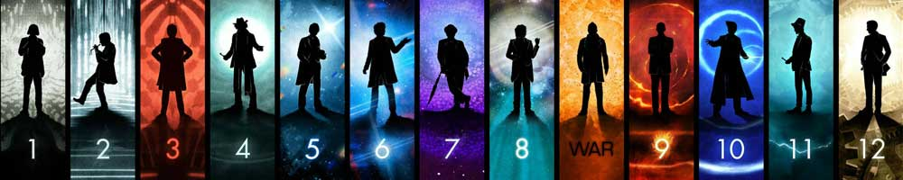

|  |
| Home | The Doctors | The Companions | The Villains | Show History |
Peter CapaldiPeter Dougan Capaldi (born 14 April 1958) is a Scottish actor and film director. He has played numerous roles in film and television, and is known for his role as the twelfth incarnation of the Doctor in the BBC One science-fiction series Doctor Who, and for the role of Malcolm Tucker, a spin doctor in the BBC comedy series The Thick of It and its film spinoff In the Loop. In 1994, he won the Academy Award for Best Live Action Short Film for his short film Franz Kafka's It's a Wonderful Life. |
Brendan Davey Monica DuCong'e Erik Eyler Kayleen Garcia Katie Hyche Ryan Moeller |
Christine O'Brien Alex Recinos Julia Schwartz Madeleine Schwartz Ann Marie Skjold Ashly Wilkins |
[Reference Links] |